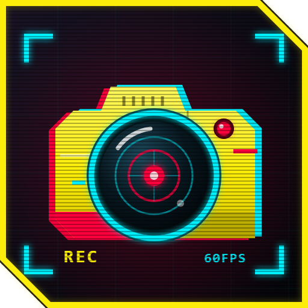

ROMAN CLIP// EDGERUNNER RECORDER
Natywna rozdzielczość działa w całości na GPU i prawie nie obciąża procesora. Zmniejszanie rozdzielczości liczy się na CPU. H.265 daje plik o ok. 30–40% mniejszy, ale część programów (np. podgląd w Discordzie) go nie odtworzy.
Gra (np. Valorant): wybierz ekran, na którym działa. Najlepiej pełny ekran okienkowy lub zwykły pełny ekran. Po zmianie rozdzielczości przez grę nagrywanie samo się restartuje. Dźwięk systemowy wymaga urządzenia „Stereo Mix” (włącz je w ustawieniach dźwięku Windowsa).
Rozpoznawanie działa offline. Fraza musi być zwykłym słowem znanym modelowi (polskie, powszechne).